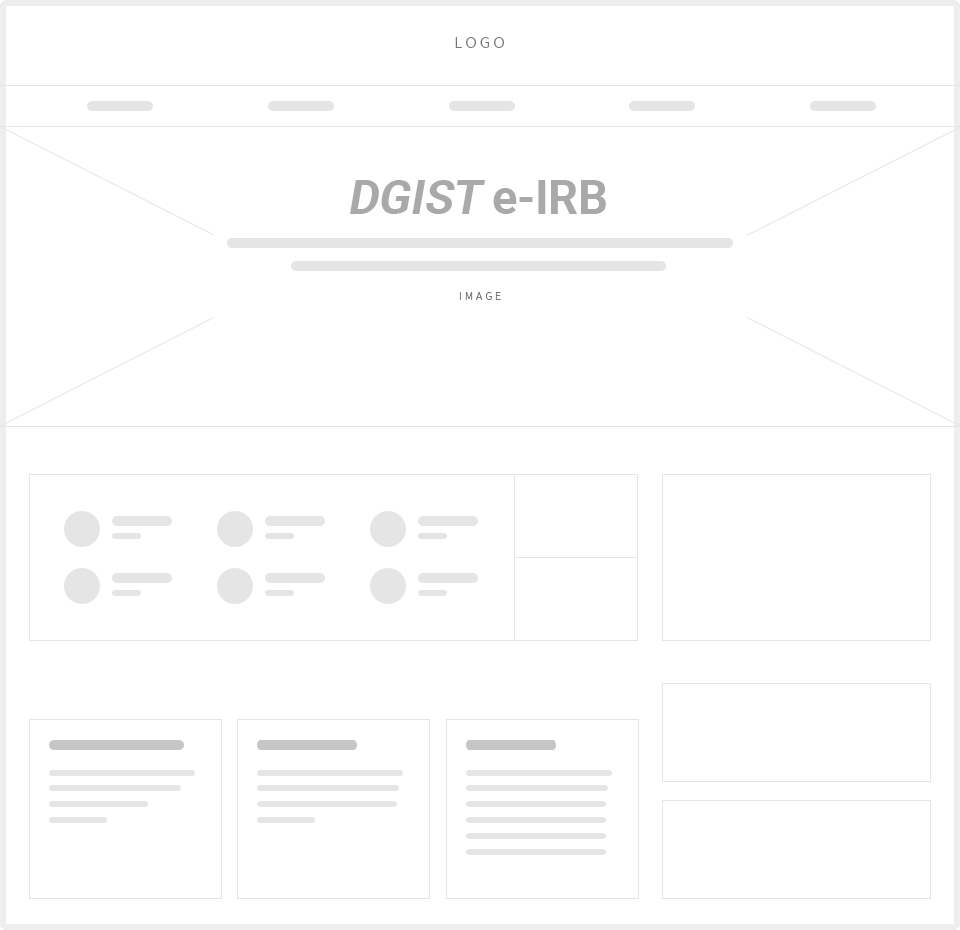
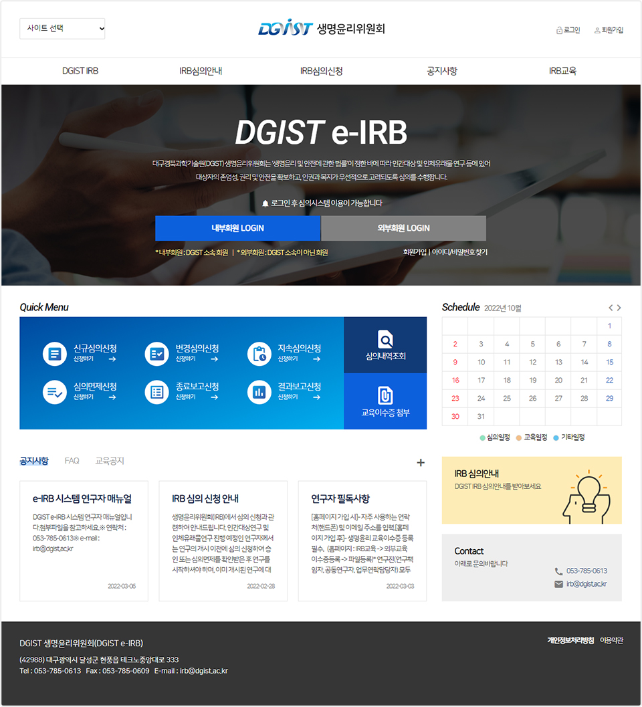

Story
대구경북과학기술원 생명윤리위원회
경북 달성에 위치한 대구경북과학기술원(DGIST) 생명윤리위원회(?)는
보건복지부가 주체한 생명윤리위원회 평가인증제를 준비하기 위한 수단 중 하나로서 "온라인으로 제작된 심의 프로그램 웹사이트"가 필요했습니다.
본 프로젝트 착수 이후 관련 회의 및 각종 보고회에 참여했으며 담당자와 오프라인(유선, 메일) 소통을 메인으로 담당했습니다.
디자인 및 코딩(html/css) 작업을 메인으로 담당했으며 서브 콘텐츠(인사말, 조직도 등) 작업은 동료 디자이너와 함께 진행했습니다.
담당자의 디자인 요구사항은 없었으며 임의로 제작 후 수차례 피드백을 반영하여 완료했습니다.
Work process

Colors
#00418e
#0a1823
#eeeeee
Font
나눔스퀘어라운드
light - Regular - Bold
DGIST 생명윤리위원회
DGIST 생명윤리위원회
DGIST 생명윤리위원회
Sketch

Final
design issue
본 웹사이트의 사용자는 크게 내부회원/외부회원으로 구분됨에 따라 LOGIN 버튼을 각각 배치했습니다.
자주 이용하는 메뉴는 Quick Menu 박스에 그룹핑 했으며 그 외 공간은 Schedule 와 공지사항 으로 배치함으로 중요 일정 및 공지 사항을 메인화면에서 바로 확인 가능하게 했습니다.

자주 이용하는 메뉴는 Quick Menu 박스에 그룹핑 했으며 그 외 공간은 Schedule 와 공지사항 으로 배치함으로 중요 일정 및 공지 사항을 메인화면에서 바로 확인 가능하게 했습니다.